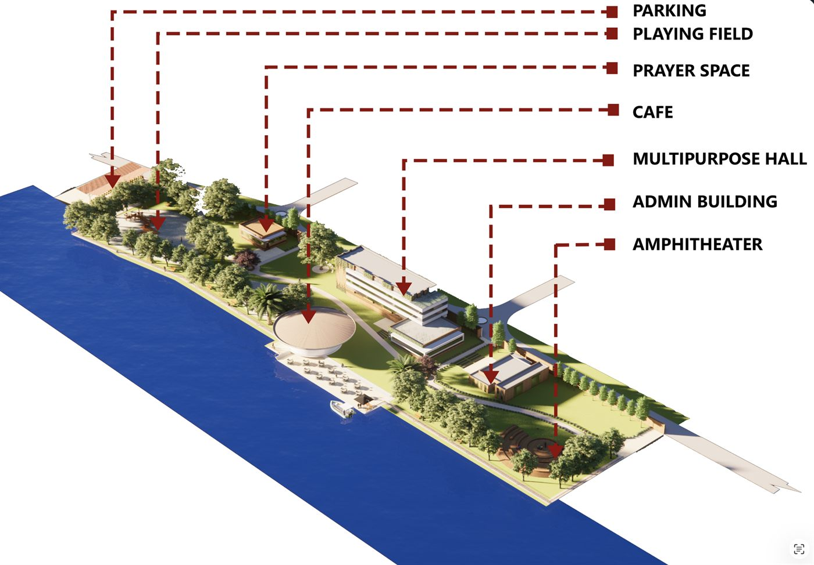
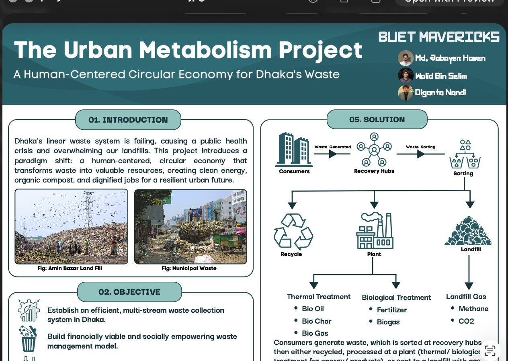
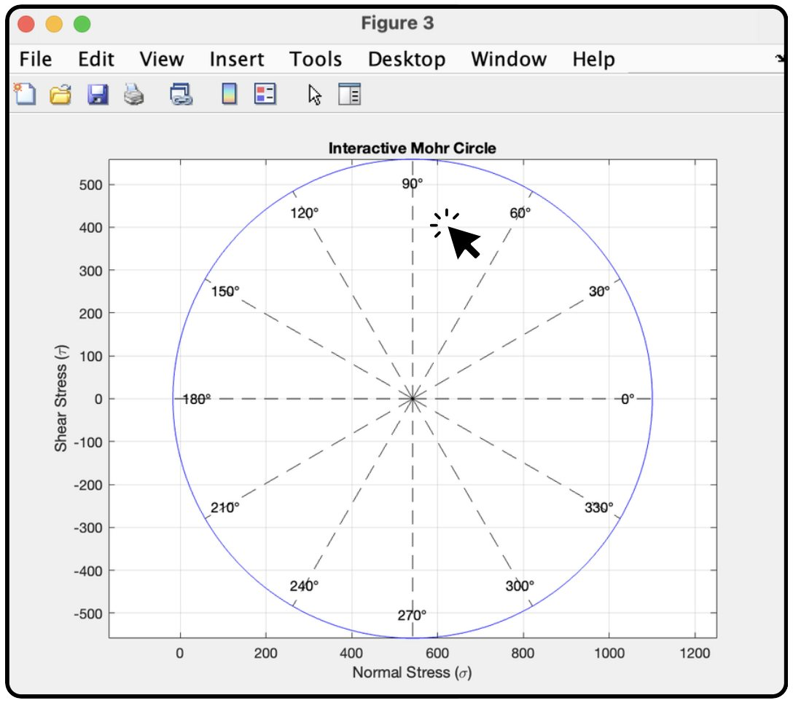

Bangladesh University of Engineering and Technology (BUET)
2021 – PresentB.Sc. in Civil Engineering · Level 4, Term 1
Major: Structural Engineering
Thesis: Wind speed mapping
I build where infrastructure meets technology.
> Structural engineering student
Civil Engineering student at BUET, majoring in Structural Engineering. I design spaces, build engineering tools, research wind hazard, and teach math to thousands of students.
I'm Jobayer, a 4th-year Civil Engineering student at Bangladesh University of Engineering and Technology (BUET), majoring in Structural Engineering. I'm passionate about the space where infrastructure meets technology.
I love the fundamentals of civil engineering, and I'm equally fascinated by how technology is reshaping the field, from smart materials to AI-assisted design.
Outside of structures, I explore the latest in tech, edit Wikipedia, read books, and watch a lot of movies and anime. I'm excited to build the future, both physically and digitally.
A few things I'm focused on:
B.Sc. in Civil Engineering · Level 4, Term 1
Higher Secondary Certificate (HSC)
Secondary School Certificate (SSC)
AutoCAD
ETABS
SAP2000
SketchUp
Enscape
MATLAB
C++
HTML
Undergraduate thesis · In progress
Developing reliable, spatially distributed wind-speed maps for wind-resistant structural design, using long-term weather-station records, extreme value analysis and GIS. The aim is to give technical evidence for improving the wind-loading provisions of the Bangladesh National Building Code (BNBC).

Urban Design · CE302
A multipurpose riverside entertainment zone in Dhaka, modelled in SketchUp and rendered in Enscape.

Poster Competition · IUT
A human-centred circular economy for Dhaka's waste, presented at a poster competition at the Islamic University of Technology.

Engineering Tool
An interactive MATLAB app for analysing stress and finding the transformed state of stress.
Jan 2026 – Present
2019 – Present
Aug 2019 – Apr 2021
Aug 2019 – Apr 2021
2020 · 1st place
Won the Notre Dame Wikipedia Edit-a-thon, organised by BUET Energy Club.
Wikipedia Asian Month
Received a postcard from Taiwan in recognition of contributions to Wikipedia Asian Month.
Notre Dame College
Awarded the Perfect Attendance certificate.
Life outside the blueprint. A personal feed where I sometimes post about a trip, a book, or whatever is on my mind.
Open the journal07 · What's next?
I'm always open to new projects, creative ideas, and opportunities to be part of an amazing team. Whether you have a question or just want to say hi, my inbox is open.
Say hello